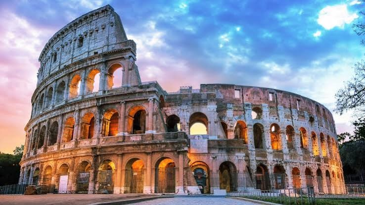
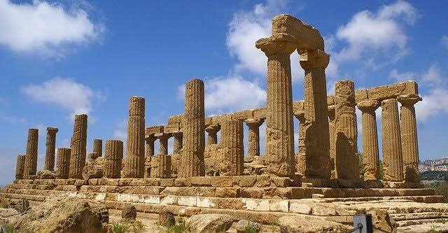
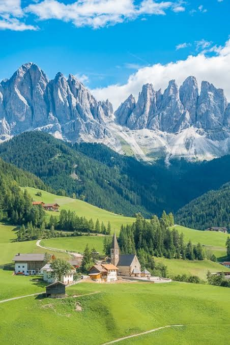

Top Italian tourism sites include the Colosseum in Rome, the Amalfi Coast in Campania, and the Tower of Pisa in Tuscany.These places are more than ancient history,they are one of the greatest marks that the romans have left behind.

It is the world's largest standing amphitheater and the definitive symbol of Rome.Commissioned around 72 AD by Emperor Vespasian and completed by his son Titus in 80 AD, it was funded by the spoils of the Jewish War. It was built primarily to house massive public spectacles, including gladiator fights, wild animal hunts, and mock sea battles, seating upwards of 50,000 spectators.

Valley of the Temples (Agrigento, Sicily): A magnificent archaeological ridge featuring a row of seven monumental, ruined Greek temples built in the Doric style. The Temple of Concordia here is one of the most perfectly intact ancient Greek structures left on Earth.

A world-famous mountain range in northeastern Italy celebrated for its dramatic, jagged limestone peaks and neon-blue alpine waters. The area is a haven for both high-altitude hiking and scenic relaxing.